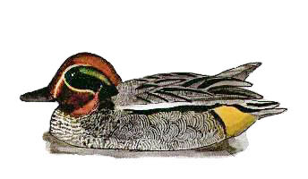

Teal
A common winter visitor to the reservoir. Flock numbers have declined greatly in recent years. This could be due to a lack of under water & shoreline vegetation, something that was once very much in abundance at this reserve.

1929 - Winter visitor.
10/04/40 - 2 pairs.
08/04/47 - 13 on the mud as reservoir was drained at this time.
03/01/54 - 20 birds approx.
27/01/57 - Maximum count of 110 birds.
27/12/58 - Maximum count of 130 birds.
29/04/65 - Single female.
01/05/69 - Pair.
18/03/72 - Pair.
27/12/72 - 30 birds.
1978 - Maximum count of 30 birds.
16/01/82 - 61 birds.
02/02/84 - 14 birds.
28/12/85 - Maximum count of 31 birds.
??/01/86 - Maximum count of approx. 150 birds.
??/12/86 - 40 birds.
16/01/87 - Maximum count of 300+ birds. Record count to date.
12/12/87 - 32 birds.
09/12/90 - 250 birds. Remained until 16/12.
08/12/91 - 50 birds.
29/01/92 - Maximum count of 100 birds.
29/12/92 - 35 birds.
04/01/93 - Maximum count of 92 birds.
28/11/93 - 42 birds.
24/12/94 - 59 birds.
29/12/95 - 87 birds.
27/01/96 - 100 birds.
15/11/96 - 65 birds.
29/12/96 - Maximum count of 103 birds.
23/01/97 - 46 birds.
02/02/98 - 28 birds.
??/12/98 - 38 birds. (AJB).
12/01/99 - 18 birds.
22/02/99 - 12 birds.
06/03/99 - 6+ birds.
??/11/99 - 14 birds.
18/12/99 - 13 birds.
2000 - 29 on 28/01, none from April to August inclusive. Up to 5 throughout September to December with numbers building in December to max 32 on 30/12.
2001 - up to 38 in January (19th). None from March to July inclusive, then numbers increasing especially from end of November to max of 180 on 15/12
2002 - Good numbers in January with max 196 on 08/01. Max 6 during August. Small numbers at end of year with max 45 on 28/12.
2003 - Recorded on 102 dates during year, but none from April to July, with max of 169 on 21/12.
2004 - Recorded on 89 dates, none from April to July inclusive with max of 87 on 01/01.
2005 - Recorded on 82 dates, none from April to June with one unseasonal bird on 07/07 and max of 63 on 27/01.
2006 - Recorded on 46 dates in smaller numbers than usual with max of 30 on 28/01.
2007 - Recorded on 82 dates, none from April to July with max of 72 on 20/12.
2008 - Recorded on 109 dates, max 55 on 11/12/08
2009 - Recorded on 123 dates, max 135 on 26/12/09
2010 - Recorded on 151 dates, max c.300 on 30/11 with 250 or more on 5 dates in November/December
2011 - Recorded on 97 dates with max 24 on 01/02 and 05/10
2012 - Recorded on 166 dates with max 40+ on 03/02 and 40+ on 20/02. None in May, June or July
2013 - Recorded on 127 dates through the year with max 104 on 05/12.
2014 - Recorded on 75 dates with max 18 on 21/01
2015 - Recorded on 154 dates with max 21 0n 21/12
2016 - Recorded on 140 dates with max of 52 on 22/12
2017 - Recorded on 129 dates with max of 55 on 20/01
2018 - Recorded on 81 dates with max of 33 on 08/01 and 33 again on 06/12
2019 - Recorded on 84 dates with max of 25 on 30/01
2020 - Recorded on 64 dates with max of 23 on 01/01
2021 - Recorded on 72 dates with mostly less than 20 and max of 50 on 13/02. None in May, June or July
2022 - Recorded on 112 dates with maximum of 146 on 16/12 and again on 18/12
2023 - Recorded on 81 dates with maximum of 45 on 03/12
2024 - Recorded on 81 dates with a maximum of 65 on 18/01. None in April or May and just singles in June and July
2025 - Recorded on 80 dates with a maximum of 75 on 20/11. Up to 49 in October. None in April, May or June